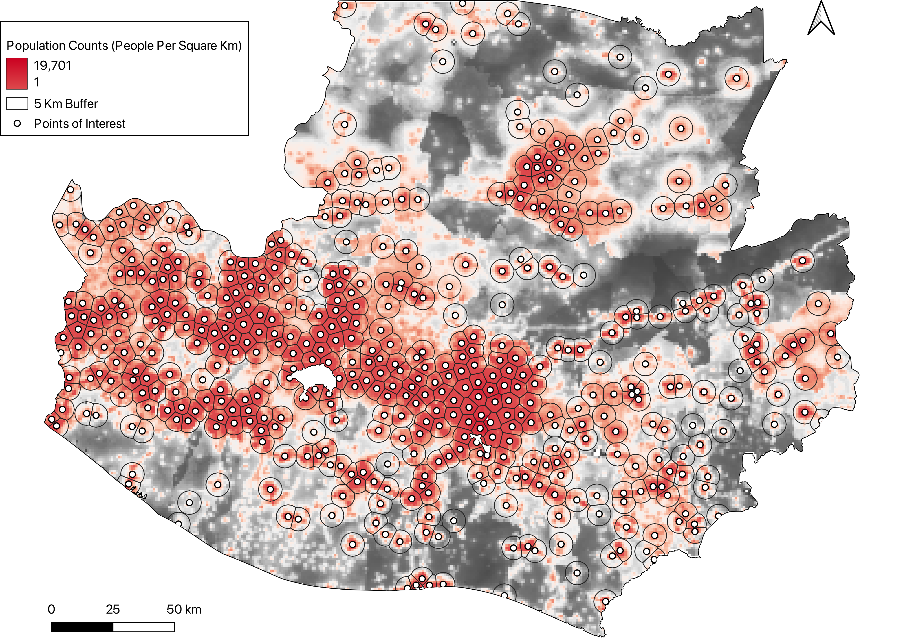
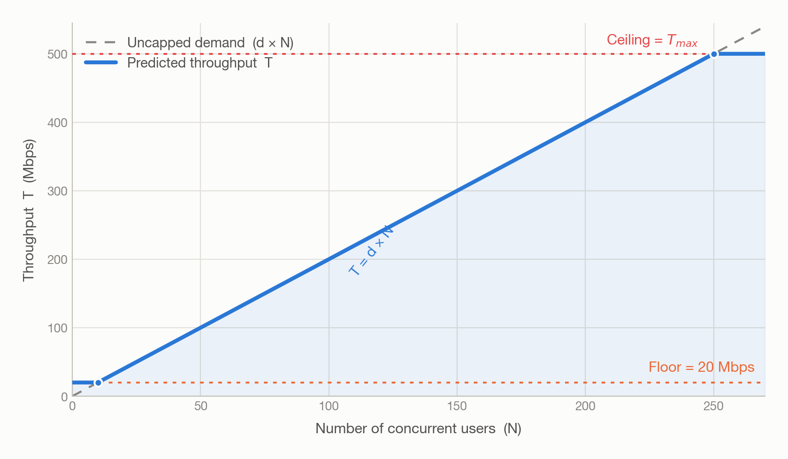
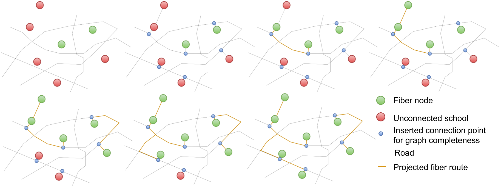
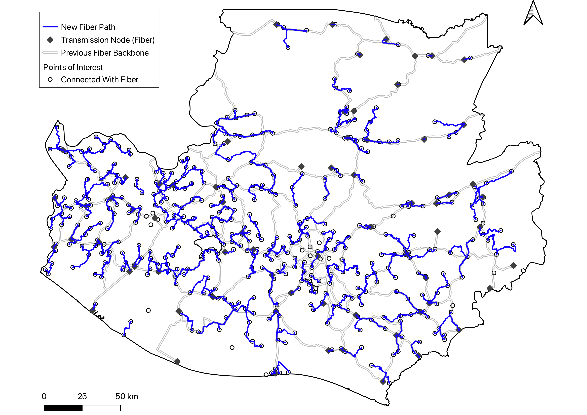
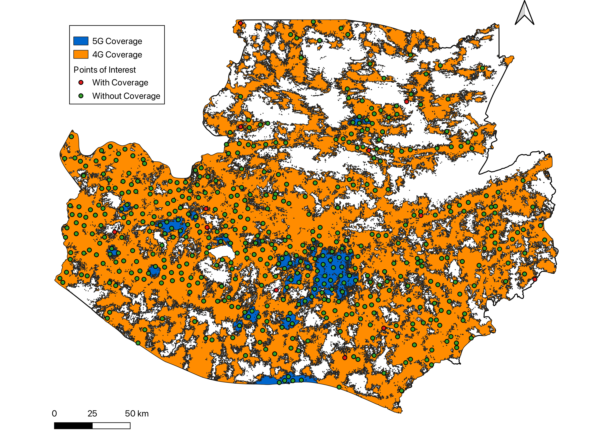
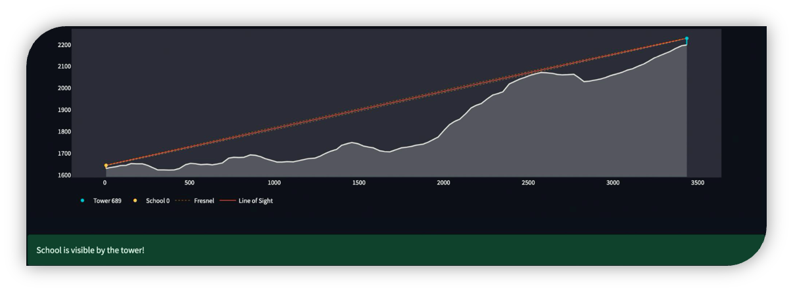
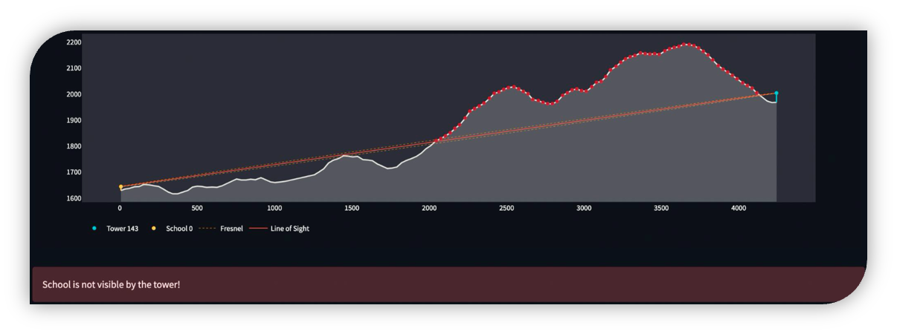

Analyses
Demand
The demand analysis estimates the number of people residing within a defined radius of each point of interest (POI) by leveraging granular population datasets. This serves two purposes: approximating the number of active internet users at each POI, and deriving the total throughput (in Mbps) that any technology option must provide to meet that demand.
If the input data includes values for total_mbps (total bandwidth demand in Mbps) or number_of_users (peak concurrent internet users), those user-supplied values are used directly. Otherwise, both quantities are estimated by the demand analysis as described below.
Number of users is estimated as:
where is the population within radius_for_demand km of the POI, and is the user rate (e.g. the share of the population of school age, for a school connectivity analysis).
Figure: Population buffers used to estimate the number of users around points of interest.

Total throughput demand is estimated as:
where is the per-user demand in Mbps, and is a cap to avoid unrealistically high estimates:
This cap is defined as the highest throughput achievable across any of the supported technology options.
Figure: Population buffers used to estimate the number of users around points of interest.

Required data inputs
- Points of interest (POI layer)
Population data is automatically retrieved by the model from WorldPop.
Model parameters
| Parameter | Description | Default | Configurable in CPP |
|---|---|---|---|
radii |
Buffer radii (km) around each POI; all distances are reported in the outputs | [1, 3, 5] | No |
radius_for_demand |
The radius (km) used to estimate the number of users, drawn from radii |
1 | No |
mbps_demand_per_user |
Per-user bandwidth demand (Mbps) | 1.5 | Yes |
user_rate |
Share of the local population counted as users (1 = entire population) | 1 | No |
overlap_allowed |
Whether buffers around POIs may overlap; if False, overlapping areas are assigned to a single POI to avoid double-counting |
False | No |
max_throughput_fiber |
Maximum achievable download speed via fibre (Mbps) | 15,000 | No |
max_throughput_p2area |
Maximum achievable download speed via cellular (Mbps) | 200 | No |
max_throughput_p2p |
Maximum achievable download speed via point-to-point microwave (Mbps) | 400 | No |
max_throughput_sat |
Maximum achievable download speed via satellite (Mbps) | 200 | No |
Non-configurable parameters are hard-coded to the default values shown above.
Models
Fibre
The fibre path model identifies the shortest paths for connecting unconnected points of interest (POIs) to the existing optical fibre network using the road network. By minimizing the total length of fibre required, this model reduces overall deployment costs while efficiently extending connectivity.
To start with, the model connects POIs and fibre nodes to the existing road network using straight lines (unless they are already on the road network). Then, for each unconnected POI, it computes the shortest path to all fibre nodes. POIs that are already connected to the fibre network can also act as fibre nodes, from which the fibre network can be extended.
Figure: Graph initialization and fibre path algorithm (school connectivity example)

At each step of the algorithm, new connections are made between connected and unconnected points as long as the length of the new connection is below a specified threshold. For example, it can be specified that no single fibre connection should be longer than 5 kilometres.
This approach enables economies of scale: POIs can act as relay points for neighbouring POIs, enabling connectivity without each one needing to connect directly to a transmission node. This approach optimises resource usage and simplifies network expansion.
In practice, this model is an application of Kruskal's algorithm to find a Minimum Spanning Tree (MST) in a network graph, where the edges are the road network and the vertices are POIs and fibre nodes. The MST ensures the minimal fibre path necessary to connect all relevant points while adhering to road network constraints related to distance.
Figure: Output of fibre path algorithm

Feasibility
Fibre is considered a feasible technology for a POI if the algorithm is able to connect that POI to the fibre network, given the algorithm constraints - particularly the maximum length of fibre allowed per connection. In practice, fibre will not be feasible for POIs that are very far away from transmission nodes or are unreachable by road.
Required data inputs
- Points of interest
- Transmission nodes
The data on the road network is automatically fetched by the model from OpenStreetMap.
Model parameters
| Parameter | Description | Default | Configurable in CPP |
|---|---|---|---|
max_connection_distance |
Maximum allowable distance for a single connection (metres) | 15,000 | Yes |
network_type |
Type of road network to consider | all_public |
No |
distance_metric |
Metric used to compute distances in the network | length |
No |
n_clusters |
Number of geographical clusters used for analysis (1 = no clustering) | 1 | No |
use_road_data |
Whether to use road network data for distance calculations | True |
No |
Non-configurable parameters are hard-coded to the default values shown above.
Fibre cost function
The fibre cost function depends on the parameters below.
| Parameter | Description | Default | Configurable in CPP |
|---|---|---|---|
hw_setup_cost_fibre |
Hardware setup cost per POI (USD) | 1,200 | Yes |
focl_constr_cost_fibre |
Fibre optic cable construction cost (USD/km) | 30,000 | Yes |
reinv_period_fibre |
Hardware reinvestment period (years) | 3 | Yes |
an_hw_maint_and_repl_fibre |
Annual hardware maintenance and replacement cost (fraction of initial CAPEX) | 0.05 | Yes |
an_isp_fees_one_mbps_fibre |
Annual ISP retail fees (USD/Mbps/year) | 60 | Yes |
max_throughput_fibre |
Maximum achievable download speed via fibre (Mbps). The throughput is capped at this value. | 15,000 | No |
interest_rate |
Discount rate used to compute present values | 0.02 | No |
Non-configurable parameters are hard-coded to the values shown above.
Inputs
In addition to the parameters above, the cost function takes the following quantities, derived upstream for each POI:
- — fibre length required to connect the POI (km)
- — throughput (Mbps)
- — project period over which costs and revenues are evaluated (years)
- — fibre expansion factor, applied to the estimated length to account for routing overhead (default 1.1)
Capital expenditure (CAPEX)
Initial CAPEX combines the fixed hardware setup cost with the cost of constructing the required fibre. The fibre length is scaled by the expansion factor to reflect that the cable actually laid exceeds the estimated path length:
Hardware is replaced at regular intervals over the project period. The number of reinvestments is the number of complete reinvestment cycles elapsed:
Total CAPEX is therefore:
Operating expenditure (OPEX)
Annual OPEX is a fixed fraction of the initial CAPEX, covering maintenance and replacement:
Cost of ownership
The total cost of ownership over the project period is the sum of total CAPEX and total OPEX:
Revenue
Annual revenue is the retail fee paid to the operator, which scales with throughput. Throughput is capped at max_throughput_fibre, since operators can only deliver download speeds up to a certain limit:
Profit
Profit over the project period is total revenue less the cost of ownership:
Annualised cost
For per-year reporting, CAPEX is annualised by spreading total CAPEX evenly across the project period and adding annual OPEX:
Present values
Costs and revenues are discounted to present value using the present value interest factor of an annuity (PVIFA), at interest rate :
The net present value is the difference between the present value of revenues and the present value of costs.
Cellular
The cellular model relies on cellular coverage analysis. If mobile coverage contours are provided, such as in the Figure below, then the coverage status is determined by overlaying the POIs over this layer.
Figure: Mobile coverage contours

If no mobile coverage contours are provided, then the locations of cell sites have to be provided and mobile coverage is determined by the distance from a cell site. Each site is assumed to provide coverage within a specified maximum radius, which is controlled by the model parameter coverage_distance.
Feasibility
Cellular is considered a feasible technology for a POI if it is within the cellular coverage area (3G, 4G or 5G).
Required data inputs
- Points of interest
- Mobile coverage contours or Cell Sites
Model parameters
| Parameter | Description | Default | Configurable in CPP |
|---|---|---|---|
coverage_distance |
Distance around cell sites used to approximate coverage when no map is available (metres) | 1,000 | No |
coverage_type |
Default network type for coverage buffers when no map is available | 4G |
No |
Non-configurable parameters are hard-coded to the default values shown above.
Cellular cost function
The cellular cost function depends on the parameters below.
| Parameter | Description | Default | Configurable in CPP |
|---|---|---|---|
hw_setup_cost_p2area |
Hardware setup cost per POI (USD) | 120 | Yes |
an_hw_maint_and_repl_p2area |
Annual hardware maintenance and replacement cost (fraction of initial CAPEX) | 0.12 | Yes |
an_isp_fees_one_mbps_p2area |
Annual ISP retail fees (USD/Mbps/year) | 180 | Yes |
reinv_period_p2area |
Hardware reinvestment period (years) | 5 | Yes |
max_throughput_p2area |
Maximum achievable download speed via cellular (Mbps). The throughput is capped at this value. | 200 | No |
interest_rate |
Discount rate used to compute present values | 0.05 | Yes |
Non-configurable parameters are hard-coded to the default values shown above.
Inputs
In addition to the parameters above, the cost function takes the following quantities, derived upstream for each POI:
- — throughput (Mbps)
- — project period over which costs and revenues are evaluated (years)
Capital expenditure (CAPEX)
Unlike fibre, cellular deployment has no per-distance construction cost; initial CAPEX is simply the hardware setup cost:
Hardware is replaced at regular intervals over the project period. The number of reinvestments is the number of complete reinvestment cycles elapsed:
Total CAPEX is therefore:
Operating expenditure (OPEX)
Annual OPEX is a fixed fraction of the initial CAPEX, covering maintenance and replacement:
Cost of ownership
The total cost of ownership over the project period is the sum of total CAPEX and total OPEX:
Revenue
Annual revenue is the retail fee paid to the operator, which scales with throughput. Throughput is capped at max_throughput_p2area, since operators can only deliver download speeds up to a certain limit:
Profit
Profit over the project period is total revenue less the cost of ownership:
Annualised cost
For per-year reporting, CAPEX is annualised by spreading total CAPEX evenly across the project period and adding annual OPEX:
Present values
Costs and revenues are discounted to present value using the present value interest factor of an annuity (PVIFA), at interest rate :
The net present value is the difference between the present value of revenues and the present value of costs.
Point-to-Point
The point-to-point model evaluates the feasibility of establishing radio links between points of interest (POIs) and cell sites using visibility analysis. This involves assessing whether the line of sight between a POI and a cell site is obstructed, ensuring that only feasible links are considered for deployment. The analysis uses open topography data from the Shuttle Radar Topography Mission (SRTM), which provides 30-meter resolution elevation data. The maximum visibility limit is set at 35 kilometres, meaning that cell sites beyond this distance are not considered visible or feasible for point-to-point connectivity.
Figure: Visible cell site

Figure: Obstructed cell site

Feasibility
Point-to-point microwave is considered a feasible technology for a POI if at least one cell site (or another POI) is visible from the POI.
Required data inputs
- Points of interest
- Cell sites
Model parameters
| Parameter | Description | Default | Configurable in CPP |
|---|---|---|---|
search_radius |
Search radius for nearby cell sites (km) | 35 | No |
poi_antenna_height |
Height of the POI antenna (metres) | 15 | No |
num_visible |
Number of visible cell sites to consider | 1 | No |
allowed_radio_types |
Allowed radio types for cell sites | ['2G','3G','4G','5G'] |
No |
Non-configurable parameters are hard-coded to the default values shown above.
Point-to-point cost function
The point-to-point cost function depends on the parameters below. Beyond the hardware and bandwidth costs, it carries spectrum licence fees, charged both as a one-time fee and as a recurring annual fee.
| Parameter | Description | Default | Configurable in CPP |
|---|---|---|---|
hw_setup_cost_p2p |
Hardware setup cost, including access links and assuming one hop per POI (USD/POI) | 3,000 | Yes |
access_link_bandwidth_p2p |
Bandwidth per access link (MHz) | 40 | Yes |
one_time_license_fee_1mhz_p2p |
One-time licence fee (USD/MHz) | 50 | Yes |
an_license_fee_1mhz_p2p |
Annual recurring licence fee (USD/MHz/year) | 15 | Yes |
an_hw_maint_and_repl_p2p |
Annual hardware maintenance and replacement cost (fraction of hardware CAPEX) | 0.1 | Yes |
an_isp_fees_one_mbps_p2p |
Annual ISP retail fees (USD/Mbps/year) | 120 | Yes |
reinv_period_p2p |
Hardware reinvestment period (years) | 7 | Yes |
max_throughput_p2p |
Maximum achievable download speed via point-to-point microwave (Mbps). The throughput is capped at this value. | 400 | No |
interest_rate |
Discount rate used to compute present values | 0.05 | Yes |
Non-configurable parameters are hard-coded to the default values shown above.
Inputs
In addition to the parameters above, the cost function takes the following quantities, derived upstream for each POI:
- — throughput (Mbps)
- — project period over which costs and revenues are evaluated (years)
Licensed bandwidth
Spectrum licence fees are charged per MHz of licensed bandwidth. With a single access link per POI, this is simply the access link bandwidth:
This bandwidth drives both the one-time and recurring licence fees:
Capital expenditure (CAPEX)
Hardware CAPEX is the per-POI setup cost, which includes the access link:
Initial CAPEX adds the one-time licence fee to the hardware CAPEX:
Hardware is replaced at regular intervals over the project period. Reinvestment applies only to the hardware component — the one-time licence fee is not repaid:
Total CAPEX is therefore:
Operating expenditure (OPEX)
Annual OPEX combines the recurring licence fee with hardware maintenance and replacement. Maintenance is charged as a fraction of hardware CAPEX only, excluding the one-time licence fee:
Cost of ownership
The total cost of ownership over the project period is the sum of total CAPEX and total OPEX:
Revenue
Annual revenue is the retail fee paid to the operator, which scales with throughput. Throughput is capped at max_throughput_p2p, since operators can only deliver download speeds up to a certain limit:
Profit
Profit over the project period is total revenue less the cost of ownership:
Annualised cost
For per-year reporting, CAPEX is annualised by spreading total CAPEX evenly across the project period and adding annual OPEX:
Present values
Costs and revenues are discounted to present value using the present value interest factor of an annuity (PVIFA), at interest rate :
The net present value is the difference between the present value of revenues and the present value of costs.
Satellite
There is no specific model used to assess the feasibility of satellite connections. They are considered always feasible if the satellite model is added to a project, which assumes that there is a satellite connectivity provider in the country.
Feasibility
Satellite connections are always considered feasible.
Required data inputs
- Points of interest
Satellite cost function
The satellite cost function is summarised below.
| Parameter | Description | Default | Configurable in CPP |
|---|---|---|---|
hw_setup_cost_sat |
Hardware setup cost per POI (USD) | 800 | Yes |
an_hw_maint_and_repl_sat |
Annual hardware maintenance and replacement cost (fraction of hardware CAPEX) | 0.1 | Yes |
an_isp_fees_one_mbps_sat |
Annual ISP retail fees (USD/Mbps/year) | 600 | Yes |
reinv_period_sat |
Hardware reinvestment period (years) | 5 | Yes |
max_throughput_sat |
Maximum achievable download speed via satellite (Mbps). The throughput is capped at this value. | 200 | No |
interest_rate |
Discount rate used to compute present values | 0.05 | Yes |
Non-configurable parameters are hard-coded to the default values shown above.
Inputs
In addition to the parameters above, the cost function takes the following quantities, derived upstream for each POI:
- — throughput (Mbps)
- — project period over which costs and revenues are evaluated (years)
Capital expenditure (CAPEX)
Satellite deployment has no per-distance or infrastructure construction cost; initial CAPEX is simply the hardware setup cost:
Hardware is replaced at regular intervals over the project period. The number of reinvestments is the number of complete reinvestment cycles elapsed:
Total CAPEX is therefore:
Operating expenditure (OPEX)
Annual OPEX is a fixed fraction of the initial CAPEX, covering maintenance and replacement:
Cost of ownership
The total cost of ownership over the project period is the sum of total CAPEX and total OPEX:
Revenue
Annual revenue is the retail fee paid to the operator, which scales with throughput. Throughput is capped at max_throughput_sat, since operators can only deliver download speeds up to a certain limit:
Profit
Profit over the project period is total revenue less the cost of ownership:
Annualised cost
For per-year reporting, CAPEX is annualised by spreading total CAPEX evenly across the project period and adding annual OPEX:
Present values
Costs and revenues are discounted to present value using the present value interest factor of an annuity (PVIFA), at interest rate :
The net present value is the difference between the present value of revenues and the present value of costs.